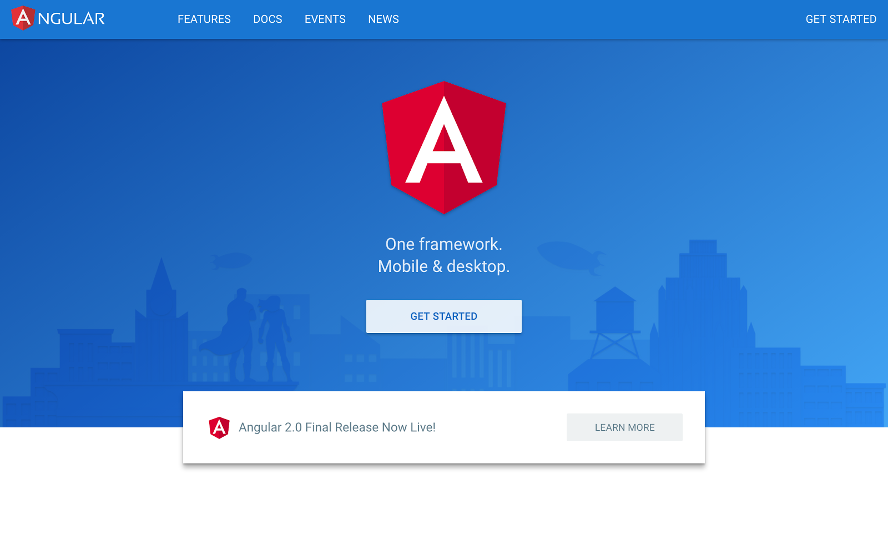

Today, at a special meetup at Google HQ, we announced the final release version of Angular, the full-platform successor to AngularJS.
今天，在Google总部一个特别的聚会上，我们发布了Angular的最终版，AngularJS的全平台继任者。
What does "final" mean? Stability that's been validated across a wide range of use cases, and a framework that's been optimized for developer productivity, small payload size, and performance. With ahead-of-time compilation and built-in lazy-loading, we’ve made sure that you can deploy the fastest, smallest applications across the browser, desktop, and mobile environments. This release also represents huge improvements to developer productivity with the Angular CLI and styleguide.
“最终版”意味着什么？意味着它的稳定性已经得到了大范围用例的验证；意味着它已经针对产品化、文件尺寸和性能进行过优化；意味着借助预编译技术和内置的惰性加载机制，我们可以确信你能发布出最快、最小的应用，并且横跨浏览器、桌面和移动平台；意味着为开发人员准备的Angular CLI和风格指南得到了大幅强化。
AngularJS first solved the problem of how to develop for an emerging web. Six years later, the challenges faced by today’s application developers, and the sophistication of the devices that applications must support, have both changed immensely. With this release, and its more capable versions of the Router, Forms, and other core APIs, today you can build amazing apps for any platform. If you prefer your own approach, Angular is also modular and flexible, so you can use your favorite third-party library or write your own.
AngularJS首先为新兴的Web技术解决了如何开发的问题。六年后的今天，开发人员面对的挑战是：应用程序必须支持多种多样、千变万化的设备。在这次发布中，我们有了更强力的路由器、表单和其它核心API。现在，你可以为任何平台构建酷炫的应用了。也许你会更喜欢用自己的方式工作，Angular同样是模块化并富有弹性的，这样你就可以自由使用你喜欢的第三方库了 —— 或是自己写一个！
From the beginning, we built Angular in collaboration with the open source development community. We are grateful to the large number of contributors who dedicated time to submitting pull requests, issues, and repro cases, who discussed and debated design decisions, and validated (and pushed back on) our RCs. We wish we could have brought every one of you in person to our meetup so you could celebrate this milestone with us tonight!
从一开始，我们就在与开源社区合作来构筑Angular。我们要对大量的捐献者表示由衷感谢！他们奉献了大量的Pull Request、Issues和可重现的用例，他们为各个设计决策展开探讨和辩论，他们对我们的各个RC进行了验证和反馈。我们真心希望可以把你们中的每一位都带到我们的聚会现场，与我们一起庆祝这个伟大的里程碑！

What’s next?
下一步做什么？
Angular is now ready for the world, and we’re excited for you to join the thousands of developers already building with Angular. But what’s coming next for Angular?
Angular已经面世，我们怀着激动的心情欢迎您成为无数个用Angular构建应用程序的开发人员中的一位。那么，Angular下一步打算做什么？
A few of the things you can expect in the near future from the Angular team:
下面是一些Angular开发组近期要做的事：
- Bug fixes and non-breaking features for APIs marked as stable
- BUG修复并对标记为稳定（stable）的API进行非破坏性变更
- More guides and live examples specific to your use cases
- 针对您的用例写更多的开发指南和在线例子
- More work on animations
- 在动画方面展开更多的工作
- Angular Material 2
- Angular Material 2库
- Moving WebWorkers out of experimental
- 让对WebWorker的支持走出实验室
- More features and more languages for Angular Universal
- 为Angular Universal开发更多的特性，支持更多的语言
- Even more speed and payload size improvements
- 进一步提高速度，缩小体积
Semantic Versioning
语义化版本
We heard loud and clear that our RC labeling was confusing. To make it easy to manage dependencies on stable Angular releases, starting today with Angular.0.0, we will move to semantic versioning. Angular versioning will then follow the MAJOR.MINOR.PATCH scheme as described by semver:
我们得承认以前的RC版本标签有些扑朔迷离。为了让您在Angular的稳定版中管理依赖更轻松，从今天的Angular.0.0开始，我们将迁移到“语义化版本”规范。今后的Angular版本将遵循semver所描述的MAJOR.MINOR.PATCH方案：
- the MAJOR version gets incremented when incompatible API changes are made to stable APIs,
- 当对标为稳定的API进行不兼容的变更时，增加主版本号（MAJOR），
- the MINOR version gets incremented when backwards-compatible functionality are added,
- 当添加了向后兼容的功能时，增加次版本号（MINOR），
- the PATCH version gets incremented when backwards-compatible bug are fixed.
- 当以向后兼容的方式修复了bug时，增加补丁号（PATCH）。
Moving Angular to semantic versioning ensures rapid access to the newest features for our component and tooling ecosystem, while preserving a consistent and reliable development environment for production applications that depend on stability between major releases, but still benefit from bug fixes and new APIs.
迁移到语义化版本方案可以确保我们的组件和工具等生态圈能快速用到最新特性。虽然即使保持了一致而可靠的开发环境，产品级应用仍然会依赖于主版本之间的稳定性，但这对BUG修复和发布新API来说仍然是显著的优点。
Contributors
贡献者
placeholder
Aaron Frost, Aaron (Ron) Tsui, Adam Bradley, Adil Mourahi, agpreynolds, Ajay Ambre, Alberto Santini, Alec Wiseman, Alejandro Caravaca Puchades, Alex Castillo, Alex Eagle, Alex Rickabaugh, Alex Wolfe, Alexander Bachmann, Alfonso Presa, Ali Johnson, Aliaksei Palkanau, Almero Steyn, Alyssa Nicoll, Alxandr, André Gil, Andreas Argelius, Andreas Wissel, Andrei Alecu, Andrei Tserakhau, Andrew, Andrii Nechytailov, Ansel Rosenberg, Anthony Zotti, Anton Moiseev, Artur Meyster, asukaleido, Aysegul Yonet, Aziz Abbas, Basarat Ali Syed, BeastCode, Ben Nadel, Bertrand Laporte, Blake La Pierre, Bo Guo, Bob Nystrom, Borys Semerenko, Bradley Heinz, Brandon Roberts, Brendan Wyse, Brian Clark, Brian Ford, Brian Hsu, dozingcat, Brian Yarger, Bryce Johnson, CJ Avilla, cjc343, Caitlin Potter, Cédric Exbrayat, Chirayu Krishnappa, Christian Weyer, Christoph Burgdorf, Christoph Guttandin, Christoph Hoeller, Christoffer Noring, Chuck Jazdzewski, Cindy, Ciro Nunes, Codebacca, Cody Lundquist, Cody-Nicholson, Cole R Lawrence, Constantin Gavrilete, Cory Bateman, Craig Doremus, crisbeto, Cuel, Cyril Balit, Cyrille Tuzi, Damien Cassan, Dan Grove, Dan Wahlin, Daniel Leib, Daniel Rasmuson, dapperAuteur, Daria Jung, David East, David Fuka, David Reher, David-Emmanuel Divernois, Davy Engone, Deborah Kurata, Derek Van Dyke, DevVersion, Dima Kuzmich, Dimitrios Loukadakis, Dmitriy Shekhovtsov, Dmitry Patsura, Dmitry Zamula, Dmytro Kulyk, Donald Spencer, Douglas Duteil, dozingcat, Drew Moore, Dylan Johnson, Edd Hannay, Edouard Coissy, eggers, elimach, Elliott Davis, Eric Jimenez, Eric Lee Carraway, Eric Martinez, Eric Mendes Dantas, Eric Tsang, Essam Al Joubori, Evan Martin, Fabian Raetz, Fahimnur Alam, Fatima Remtullah, Federico Caselli, Felipe Batista, Felix Itzenplitz, Felix Yan, Filip Bruun, Filipe Silva, Flavio Corpa, Florian Knop, Foxandxss, Gabe Johnson, Gabe Scholz, GabrielBico, Gautam krishna.R, Georgii Dolzhykov, Georgios Kalpakas, Gerd Jungbluth, Gerard Sans, Gion Kunz, Gonzalo Ruiz de Villa, Grégory Bataille, Günter Zöchbauer, Hank Duan, Hannah Howard, Hans Larsen, Harry Terkelsen, Harry Wolff, Henrique Limas, Henry Wong, Hiroto Fukui, Hongbo Miao, Huston Hedinger, Ian Riley, Idir Ouhab Meskine, Igor Minar, Ioannis Pinakoulakis, The Ionic Team, Isaac Park, Istvan Novak, Itay Radotzki, Ivan Gabriele, Ivey Padgett, Ivo Gabe de Wolff, J. Andrew Brassington, Jack Franklin, Jacob Eggers, Jacob MacDonald, Jacob Richman, Jake Garelick, James Blacklock, James Ward, Jason Choi, Jason Kurian, Jason Teplitz, Javier Ros, Jay Kan, Jay Phelps, Jay Traband, Jeff Cross, Jeff Whelpley, Jennifer Bland, jennyraj, Jeremy Attali, Jeremy Elbourn, Jeremy Wilken, Jerome Velociter, Jesper Rønn-Jensen, Jesse Palmer, Jesús Rodríguez, Jesús Rodríguez, Jimmy Gong, Joe Eames, Joel Brewer, John Arstingstall, John Jelinek IV, John Lindquist, John Papa, John-David Dalton, Jonathan Miles, Joost de Vries, Jorge Cruz, Josef Meier, Josh Brown, Josh Gerdes, Josh Kurz, Josh Olson, Josh Thomas, Joseph Perrott, Joshua Otis, Josu Guiterrez, Julian Motz, Julie Ralph, Jules Kremer, Justin DuJardin, Kai Ruhnau, Kapunahele Wong, Kara Erickson, Kathy Walrath, Keerti Parthasarathy, Kenneth Hahn, Kevin Huang, Kevin Kirsche, Kevin Merckx, Kevin Moore, Kevin Western, Konstantin Shcheglov, Kurt Hong, Levente Morva, laiso, Lina Lu, LongYinan, Lucas Mirelmann, Luka Pejovic, Lukas Ruebbelke, Marc Fisher, Marc Laval, Marcel Good, Marcy Sutton, Marcus Krahl, Marek Buko, Mark Ethan Trostler, Martin Gontovnikas, Martin Probst, Martin Staffa, Matan Lurey, Mathias Raacke, Matias Niemelä, Matt Follett, Matt Greenland, Matt Wheatley, Matteo Suppo, Matthew Hill, Matthew Schranz, Matthew Windwer, Max Sills, Maxim Salnikov, Melinda Sarnicki Bernardo, Michael Giambalvo, Michael Goderbauer, Michael Mrowetz, Michael-Rainabba Richardson, Michał Gołębiowski, Mikael Morlund, Mike Ryan, Minko Gechev, Miško Hevery, Mohamed Hegazy, Nan Schweiger, Naomi Black, Nathan Walker, The NativeScript Team, Nicholas Hydock, Nick Mann, Nick Raphael, Nick Van Dyck, Ning Xia, Olivier Chafik, Olivier Combe, Oto Dočkal, Pablo Villoslada Puigcerber, Pascal Precht, Patrice Chalin, Patrick Stapleton, Paul Gschwendtner, Pawel Kozlowski, Pengfei Yang, Pete Bacon Darwin, Pete Boere, Pete Mertz, Philip Harrison, Phillip Alexander, Phong Huynh, Polvista, Pouja, Pouria Alimirzaei, Prakal, Prayag Verma, Rado Kirov, Raul Jimenez, Razvan Moraru, Rene Weber, Rex Ye（叶志敏）, Richard Harrington, Richard Kho, Richard Sentino, Rob Eisenberg, Rob Richardson, Rob Wormald, Robert Ferentz, Robert Messerle, Roberto Simonetti, Rodolfo Yabut, Sam Herrmann, Sam Julien, Sam Lin, Sam Rawlins, Sammy Jelin, Sander Elias, Scott Hatcher, Scott Hyndman, Scott Little, ScottSWu, Sebastian Hillig, Sebastian Müller, Sebastián Duque, Sekib Omazic, Shahar Talmi, Shai Reznik, Sharon DiOrio, Shannon Ayres, Shefali Sinha, Shlomi Assaf, Shuhei Kagawa, Sigmund Cherem, Simon Hürlimann (CyT), Simon Ramsay, Stacy Gay, Stephen Adams, Stephen Fluin, Steve Mao, Steve Schmitt, Suguru Inatomi, Tamas Csaba, Ted Sander, Tero Parviainen, Thierry Chatel, Thierry Templier, Thomas Burleson, Thomas Henley, Tim Blasi, Tim Ruffles, Timur Meyster, Tobias Bosch, Tony Childs, Tom Ingebretsen, Tom Schoener, Tommy Odom, Torgeir Helgevold, Travis Kaufman, Trotyl Yu, Tycho Grouwstra, The Typescript Team, Uli Köhler, Uri Shaked, Utsav Shah, Valter Júnior, Vamsi V, Vamsi Varikuti, Vanga Sasidhar, Veikko Karsikko, Victor Berchet, Victor Mejia, Victor Savkin, Vinci Rufus, Vijay Menon, Vikram Subramanian, Vivek Ghaisas, Vladislav Zarakovsky, Vojta Jina, Ward Bell, Wassim Chegham, Wenqian Guo, Wesley Cho, Will Ngo, William Johnson, William Welling, Wilson Mendes Neto, Wojciech Kwiatek, Yang Lin, Yegor Jbanov, Zach Bjornson, Zhicheng Wang（汪志成 - 雪狼）等很多人……
With gratitude and appreciation, and anticipation to see what you'll build next, welcome to the next stage of Angular.
带着激动与感恩，我们渴望看到你们构建出更加激动人心的应用。欢迎来到Angular的新时代！
译者的话
我们是得到官方认可的Angular中文社区。接下来，我们还会继续以一天一篇的频度推送最新消息和技术文章，欢迎扫码关注我们：